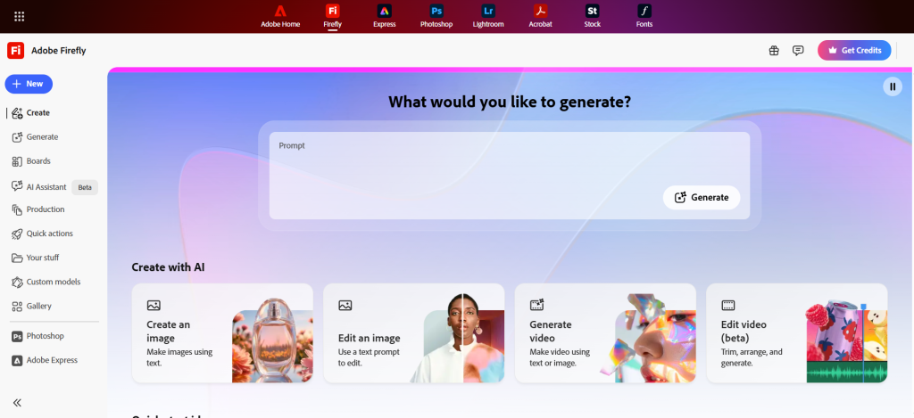
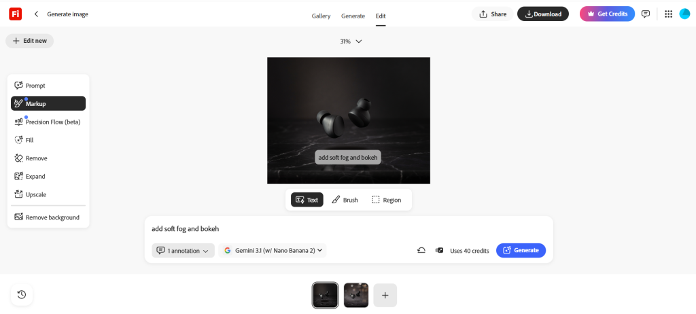
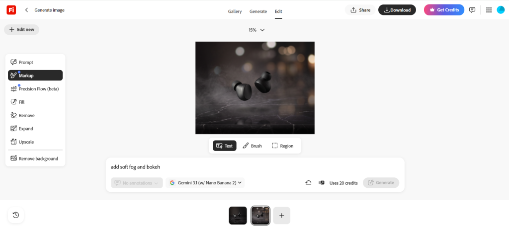
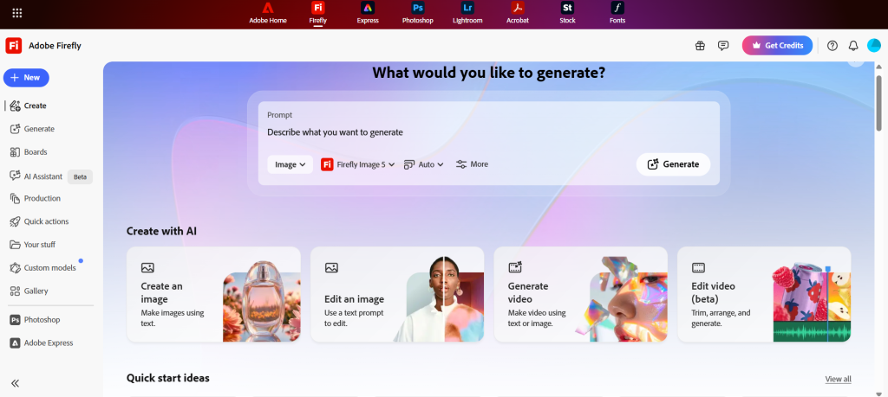
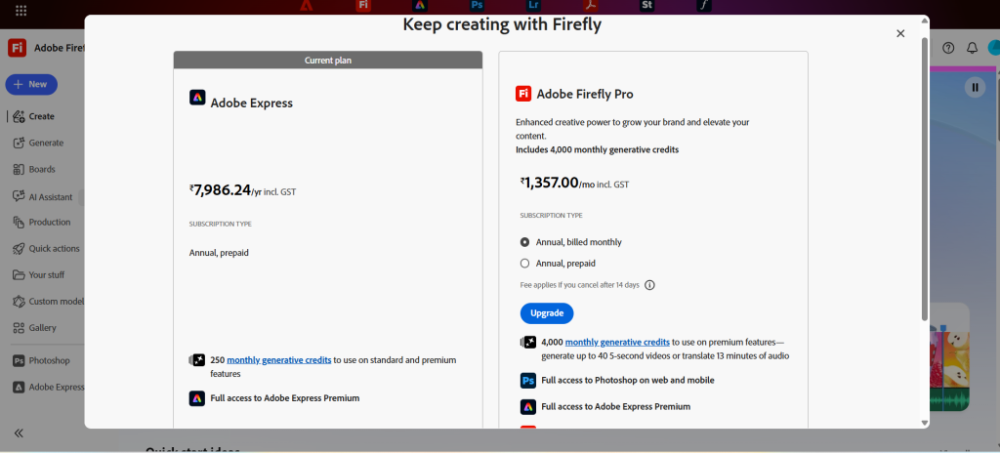

Adobe Firefly has grown from a simple image generator into a full-blown creative AI studio that lives inside the Creative Cloud ecosystem. In 2026 it delivers commercially safe image, video, and audio tools with rock-solid editing precision and seamless Photoshop/Premiere workflows.

Rating: 9.2/10
Best for: Professional designers, marketers, YouTube creators, and agencies who need on-brand, client-ready assets fast. Strengths: Unbeatable commercial safety, Precision Flow editing, deep Creative Cloud integration, and reliable outputs. Weaknesses: Credit system still bites during heavy video experiments, and it sometimes lacks the wild artistic flair of pure-play tools like Midjourney.
If you create content for money and hate copyright headaches, Firefly is now one of the smartest tools in your kit.
What Is Adobe Firefly?
Adobe Firefly is Adobe’s family of generative AI models built exclusively for creatives. You can access it at firefly.adobe.com, inside Photoshop, Premiere Pro, Illustrator, or via the free mobile app.
Unlike many AI tools trained on random internet scrapes, Firefly was trained on licensed Adobe Stock images and public-domain content. That single decision gives every generation built-in commercial safety and indemnification — something brands and agencies have been begging for.
In 2026 Firefly feels less like a “generator” and more like a creative partner. It now pulls in partner models from Google, OpenAI, Runway, and Kling, all inside one familiar interface.
My Experience Using Adobe Firefly in 2026
I’ve been testing Firefly daily for the past six weeks while working on client campaigns and my own YouTube channel. Here’s what actually happened when I put it through real workflows.
I started with product photography prompts. One that consistently blew me away: “Cinematic close-up of matte-black wireless earbuds floating above a dark marble surface, dramatic side lighting, subtle reflections, 8K photorealistic, product photography style.”

The first generation was 95 % there. I opened Precision Flow, dragged the “mood” slider from cool to warm, and the lighting shifted instantly without me rewriting the prompt. Then I used AI Markup — I drew a quick rectangle over the background and typed “add soft fog and bokeh.” Done in under 10 seconds. The before-and-after was night-and-day clean.

Video generation surprised me most. I needed 5-second b-roll for a tech explainer: “Slow-motion shot of a hand placing a glowing smartphone on a wooden desk, morning sunlight streaming through blinds, cinematic, 4K.”
Firefly delivered three solid takes using the Kling 3.0 model. Motion was smooth, lighting consistent, and the camera move felt natural. I dropped the clip straight into Premiere Pro’s timeline and used the new Enhance Speech tool on the voiceover I recorded earlier. No more jumping between apps.
The Firefly AI Assistant (beta) is the feature I didn’t know I needed. I typed: “Create a full social media campaign for a coffee brand — logo mockup, three Instagram posts, one 15-second Reel, and matching thumbnails.”
It planned the whole thing, generated assets, and even suggested color palettes based on my brand kit. I still tweaked a few things, but it cut my campaign setup time from two hours to twenty minutes.
Where it struggled: Complex character consistency in longer videos still needs manual fixes. Text in videos can glitch if you push the prompt too hard. And yes — video credits disappear fast. I burned through 800 credits in one afternoon of experimentation.
Speed & mobile: Web app is snappy even on my mid-range laptop. The mobile app on iPhone let me generate thumbnails while waiting in line for coffee — genuinely useful.
Biggest frustrations: The credit meter. During heavy testing days I hit the wall and had to wait for the monthly reset. Also, while outputs are safe and clean, they sometimes feel a little “corporate polished” compared to Midjourney’s more artistic chaos.
What impressed me most: How perfectly Generative Fill and Expand now live inside Photoshop’s contextual taskbar. No more copy-paste between tabs. It just feels like magic that actually works for paying clients.
Overall, Firefly feels like the tool I reach for when the project has to ship tomorrow and the client is watching.
Key Features of Adobe Firefly
AI Image Generation
Photorealistic 4MP outputs with excellent text rendering and style control. Great for product shots, social graphics, and concept art.
Precision Flow
My favorite new tool. Generate variations from one prompt, then use sliders to adjust lighting, mood, color grading, or composition. Zero prompt rewriting needed.
AI Markup
Draw on any image with brushes or shapes and tell Firefly exactly what to change. Feels like Photoshop’s smart object on steroids.
Generative Fill / Expand / Remove
The classics are faster and more accurate than ever. Background removal is now one-click reliable.
Video Generation
5–10 second clips from text or images. Multi-track timeline editor inside the browser with Adobe Stock music, Enhance Speech, and color grading. Kling 3.0 and Runway models give impressive motion consistency.
Firefly AI Assistant (Beta)
Conversational agent that plans and executes multi-step tasks across Photoshop, Premiere, and more. Huge time-saver for campaign work.
Audio Tools
Auto-clean dialogue, generate sound effects, and lip-sync translation. Pairs beautifully with AI talking avatar generators for full video workflows.
Creative Cloud Integration
Tools appear right where you work — Photoshop taskbar, Premiere timeline, Illustrator. No context switching.
Firefly Boards
Infinite collaborative canvas for mood boards and storyboarding. Teams love it.
Custom Models
Train Firefly on your own brand assets so every generation stays on-brand automatically.

Adobe Firefly Pricing
Firefly uses a credit system, but Adobe has been generous with unlimited promotions in 2026.
| Plan | Monthly Price | Generative Credits | Best For | Extra Perks |
|---|---|---|---|---|
| Free | $0 | Limited | Students & testing | Basic access |
| Firefly Standard | $9.99 | 2,000 | Hobbyists & light users | Web app access |
| Firefly Pro | $19.99 | 4,000+ | Freelancers & creators | Photoshop web + Express Premium |
| Pro Plus / Premium | $39.99+ | 10,000–50,000+ | Agencies & teams | Unlimited promos + API access |
Credit add-ons are cheap if you go over. The unlimited promotions running until May 20 on many models make now a great time to test heavy workflows.

Adobe Firefly vs Midjourney vs Runway
| Feature | Adobe Firefly | Midjourney | Runway |
|---|---|---|---|
| Commercial Safety | Excellent (indemnified) | Moderate | Moderate |
| Video Tools | Strong (5-10s clips) | Weak | Excellent |
| Editing Precision | Excellent | Limited | Good |
| Creative Cloud Integration | Best | None | Moderate |
| Artistic “Wow” Factor | Good | Excellent | Very Good |
| Best For | Professionals & brands | Artists & concept work | Filmmakers & motion |
| Pricing Model | Credits + subscription | Subscription | Credits |
Detailed comparison analysis: Midjourney still wins for pure artistic exploration — its images often feel more inspired. But if you need to deliver to a client tomorrow with zero legal risk, Firefly wins every time.
Runway beats Firefly for long-form video and advanced motion graphics (check my guide to the 5 best AI tools for motion graphics). However, Firefly’s direct Premiere Pro integration and commercial safety make it the safer daily driver for most creators.
Best Use Cases for Adobe Firefly
- YouTube creators: Thumbnails, channel art, and short b-roll clips
- Marketers & agencies: On-brand social campaigns and ad creatives
- Designers: Product mockups and packaging concepts
- Thumbnail creators: Fast, high-converting YouTube thumbnails
- Video editors: Quick b-roll and motion graphics (pairs well with AI avatar tools for multilingual voiceovers)
- Social media managers: Consistent brand visuals across platforms
Best Prompting Tips for Firefly
- Cinematic prompts: Add “cinematic lighting, anamorphic lens flare, film grain, 35mm”
- Realistic product shots: Specify “studio lighting, white seamless background, 8K product photography”
- YouTube thumbnails: “Bold text overlay, high contrast, emotional face, clickbait style, vibrant colors”
- Ad design: Include your brand colors and “minimalist, clean, conversion-focused”
- Concept art: “Detailed matte painting, dramatic atmosphere, art by [artist name]”
Pro tip: Reference images work amazingly well in AI Markup.
Strengths and Weaknesses
Strengths
- Best-in-class commercial safety and indemnification
- Precision Flow and AI Markup feel like true creative superpowers
- Deep, native Creative Cloud integration
- Fast, reliable outputs perfect for client work
- Strong collaboration via Firefly Boards
Weaknesses
- Credit limits still sting during video testing
- Artistic edge sometimes trails pure artistic tools
- Video clips are still relatively short
- Occasional need for small manual fixes on complex scenes
Ethical AI and Commercial Safety
This is where Firefly separates itself. Every model is trained only on licensed content. Adobe offers legal indemnification for eligible generations — meaning brands can use the output commercially without fear of copyright lawsuits.
Content Credentials (C2PA standard) embed provenance data so clients know exactly how the asset was created. For agencies and enterprises, this peace of mind is worth the subscription alone.
Who Should Use Adobe Firefly? Who Should Avoid It?
Use Firefly if you:
- Work with clients or brands that demand legal safety
- Live inside Creative Cloud already
- Need fast, editable, on-brand assets
- Value workflow speed over pure artistic experimentation
Avoid Firefly if you:
- Only want the most artistic, experimental images (Midjourney is better)
- Need long-form video generation (Runway or dedicated tools win)
- Are on a very tight budget and don’t mind credit-free alternatives
Final Verdict
Adobe Firefly in 2026 is the most practical, professional-grade AI creative tool available — especially if you already pay for Creative Cloud. It won’t replace your entire creative brain, but it will 3x your output while keeping everything legally safe and on-brand.
Is it worth paying for? Yes — the Pro plan pays for itself in saved hours within the first month. Should professionals switch? Most already have. Beginners? Start with the free tier and the excellent mobile app.
If you create content for a living, Firefly is now table stakes. Head to firefly.adobe.com and run your own tests — you’ll see exactly why I’m this excited about it.
Frequently Asked Questions
Is Adobe Firefly free?
Is Adobe Firefly commercially safe?
Firefly vs Midjourney — which is better?
Can Firefly generate videos?
Is Firefly better than Canva AI?
Does Firefly work with Photoshop?
Can Firefly create YouTube thumbnails?
Is Firefly good for marketers?
Ready to try it yourself? Firefly continues to improve monthly, and the current unlimited promotions make 2026 the perfect time to dive in.